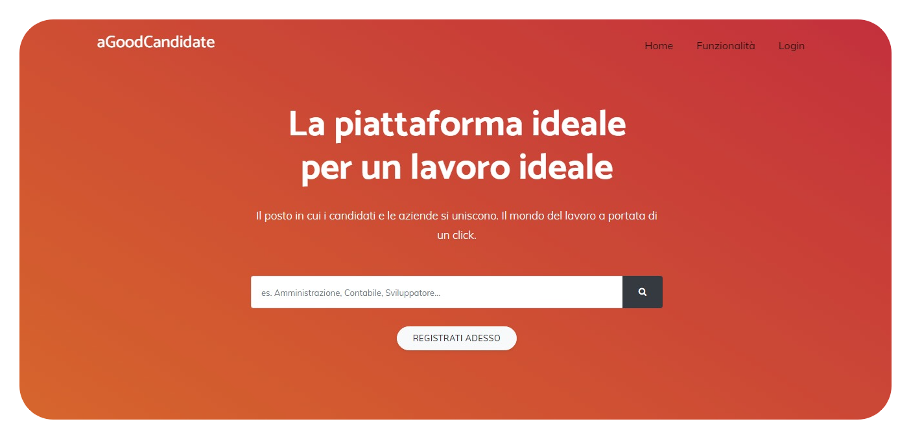

aGoodCandidate
Progetto sviluppato in collaborazione con Marcello Sardella.

Per che cosa è stato sviluppato?
Lo scopo principale della piattaforma era quello di offrire ai candidati la possibilità di creare un curriculum
online gratis e farsi notare dalle aziende in base alle competenze e alle esperienze acquisite.
Il sito era stato concepito inizialmente per offrire all'aziende un valido strumento per selezionare i
migliori talenti della zona.
Questi potevano essere selezionati attraverso:
- Quiz personalizzati dalle aziende
- Visione profili
- Rating e commenti di altre aziende
Tecnologie impiegate


")